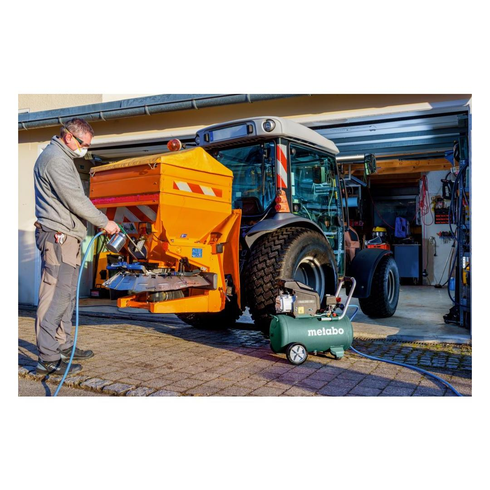
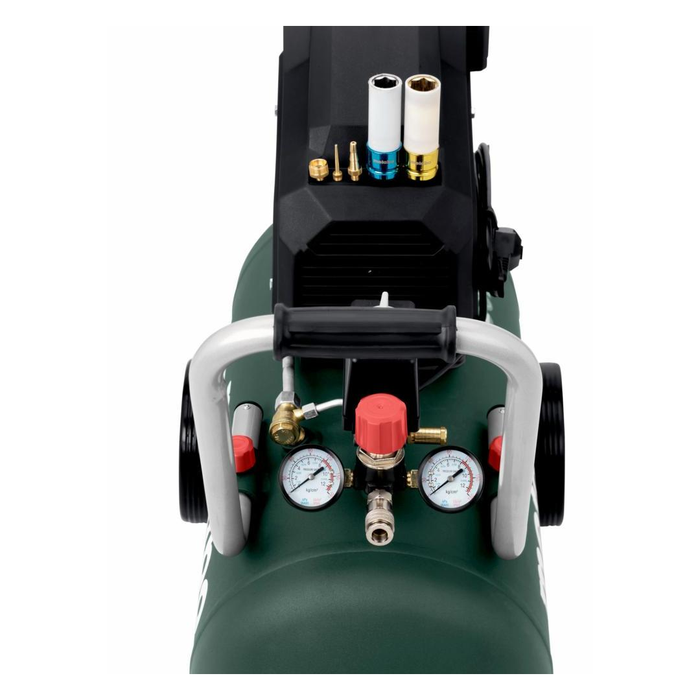
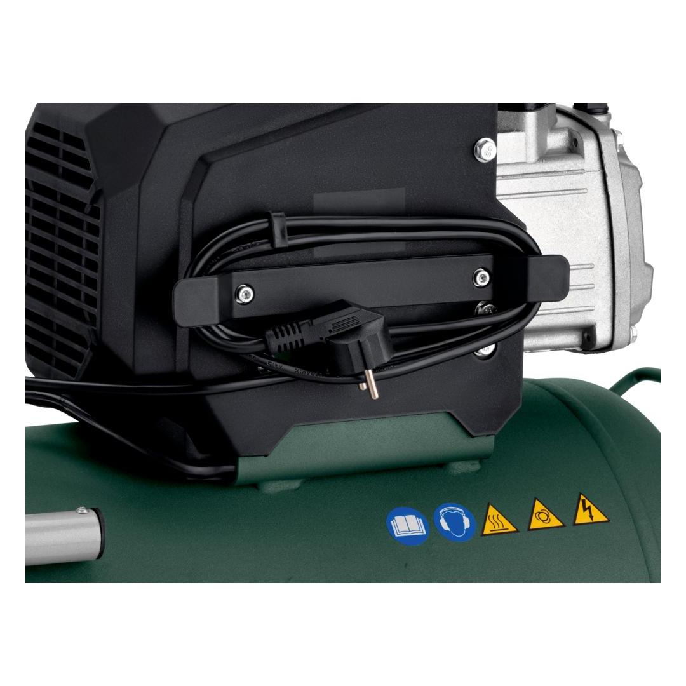
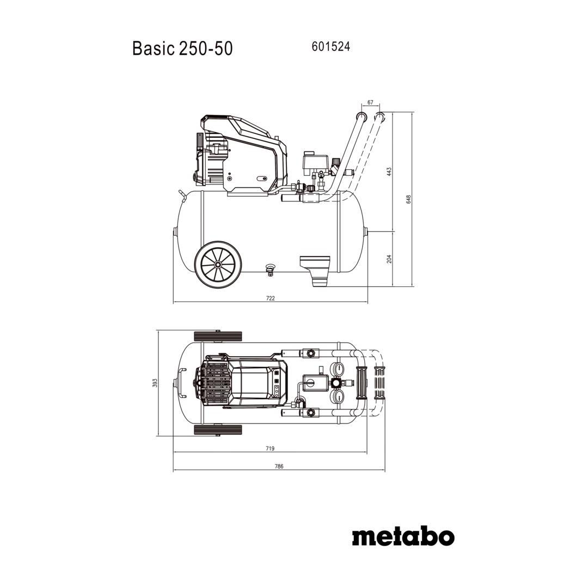
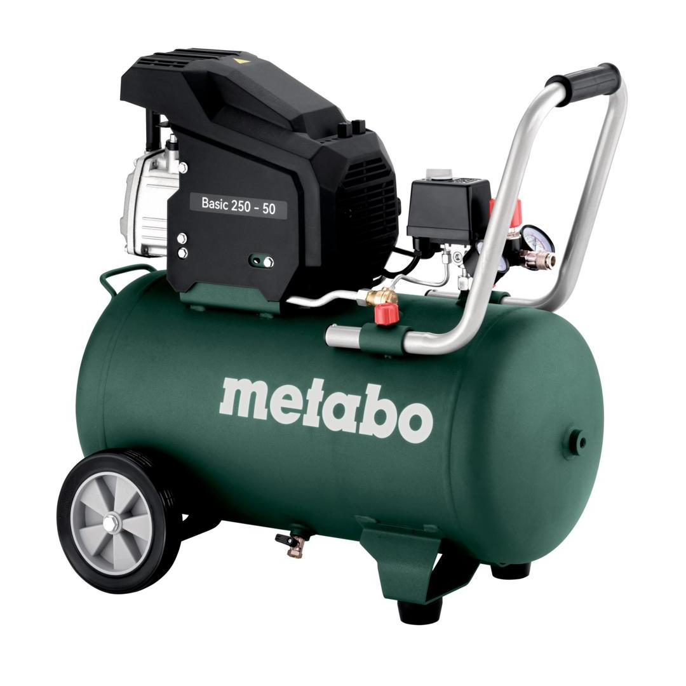

Metabo | Impact Wrench 6.2Bar
601590000






| Filling capacity | 110 l/min / 3.9 cfm |
| Effective delivery volume (at 80% max. pressure) | 95 l/min / 3.4 cfm |
| Maximum pressure | 8 bar / 116 psi |
| Rated input power | 1.5 |
| Tank capacity | 50 l / 13.2 gal |
Product Description
- Powerful, robust compressor for simple, commercial use
- Oil-lubricated Piston Condenser
- Slots for small accessories and practical cable storage on the compressor
- Instrument panel with easy to read manometers for tank- and working pressure
- Operating pressure can be regulated according to application by means of a pressure reducer and manometer
- Convenient pressure switch for good cold starting, complete with relief valve
- Overload protection: protects the motor from overheating
- Large wheels and rubberised feet for optimal stability
- Rubber-coated handle for comfortable handling
- Comfortable condensate outlet via ball valve with wing grip
- 10 year tank warranty against rust
- Easy setup: smart packaging concept for quick, simple assembly of wheels and rubber feet after unpacking
Product Highlights
Overload protectionOverload protection
protects the motor from overheating
Technical Details
KEY FIGURES| Suction rate | 220 l/min / 7.8 cfm |
| Filling capacity | 110 l/min / 3.9 cfm |
| Effective delivery volume (at 80% max. pressure) | 95 l/min / 3.4 cfm |
| Maximum pressure | 8 bar / 116 psi |
| Rated input power | 1.5 |
| Maximum speed | 2800 rpm |
| Tank capacity | 50 l / 13.2 gal |
| Sound pressure level (LpA) | 73 dB(A) |
| Sound power level (LwA) | 93 dB(A) |
| Dimensions | 740 x 330 x 670 mm // 29 1/8 x 13 x 26 3/8 " |
| Weight | 32.5 kg / 71.7 lbs |
NOISE EMISSION| Sound pressure level | 73 dB(A) |
| Sound power level (LwA) | 93 dB(A) |
Scope of delivery
| Universal quick-action coupling |